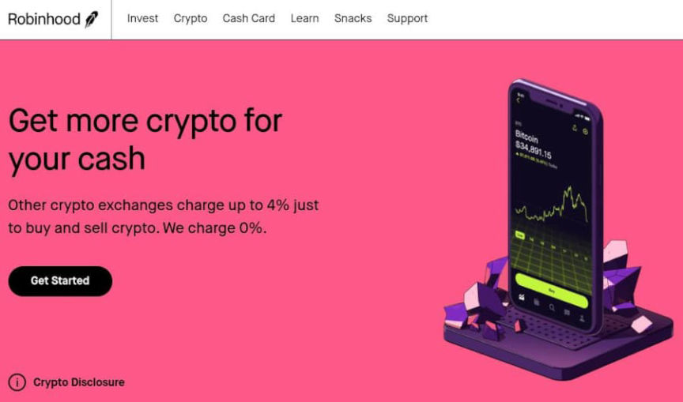
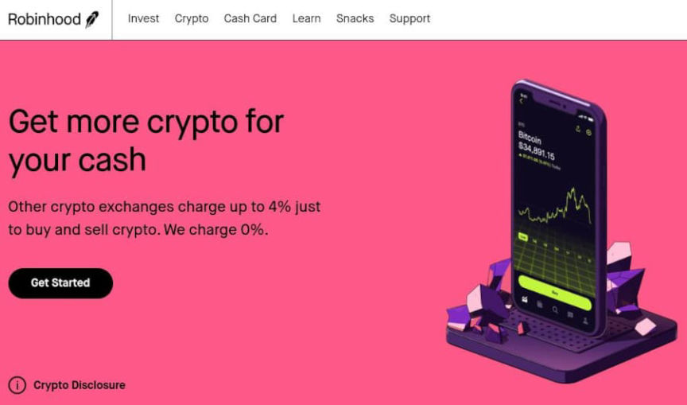

Robinhood Crypto Fined $30 Million for AML Violations in NY
In August 2022, New York State’s Department of Financial Services (“DFS”) announced that Robinhood Crypto agreed to pay a $30 million fine for failing to comply with anti-money laundering and cybersecurity regulations.
“As its business grew, Robinhood Crypto failed to invest the proper resources and attention to develop and maintain a culture of compliance—a failure that resulted in significant violations of the Department’s anti-money laundering and cybersecurity regulations,” Superintendent of Financial Services Adrienne A. Harris said. “All virtual currency companies licensed in New York State are subject to the same anti-money laundering, consumer protection, and cybersecurity regulations as traditional financial services companies. DFS will continue to investigate and take action when any licensee violates the law or the Department’s regulations, which are critical to protecting consumers and ensuring the safety and soundness of the institutions.”
New York’s DFS discovered “significant” violations of the Department’s Virtual Currency Regulation (23 NYCRR Part 200), Money Transmitter Regulation (3 NYCRR Part 417), Transaction Monitoring Regulation (23 NYCRR Part 504), and Cybersecurity Regulation (23 NYCRR Part 500) during an audit in 2020.

According to the DFS, Robinhood Crypto monitored transactions manually. The Department that monitored transactions was understaffed. With more than 100,000 transactions a day, there was a backlog of transactions waiting to be reviewed. Robinhood failed to “foster and maintain an adequate culture of compliance.” What…?
As a part of the settlement, Robinhood Crypto will need to hire an independent consultant to evaluate the company’s compliance with New York’s money laundering regulations.
DFS SUPERINTENDENT HARRIS ANNOUNCES $30 MILLION PENALTY ON ROBINHOOD CRYPTO FOR SIGNIFICANT ANTI-MONEY LAUNDERING, CYBERSECURITY & CONSUMER PROTECTION VIOLATIONS | , archive.is, archive.org
“As its business grew, Robinhood Crypto failed to invest the proper resources and attention to develop and maintain a culture of compliance—a failure that resulted in significant violations of the Department’s anti-money laundering and cybersecurity regulations,” Superintendent of Financial Services Adrienne A. Harris said. “All virtual currency companies licensed in New York State are subject to the same anti-money laundering, consumer protection, and cybersecurity regulations as traditional financial services companies. DFS will continue to investigate and take action when any licensee violates the law or the Department’s regulations, which are critical to protecting consumers and ensuring the safety and soundness of the institutions.”
New York’s DFS discovered “significant” violations of the Department’s Virtual Currency Regulation (23 NYCRR Part 200), Money Transmitter Regulation (3 NYCRR Part 417), Transaction Monitoring Regulation (23 NYCRR Part 504), and Cybersecurity Regulation (23 NYCRR Part 500) during an audit in 2020.

Still not fined for freezing certain trades though
According to the DFS, Robinhood Crypto monitored transactions manually. The Department that monitored transactions was understaffed. With more than 100,000 transactions a day, there was a backlog of transactions waiting to be reviewed. Robinhood failed to “foster and maintain an adequate culture of compliance.” What…?
As a part of the settlement, Robinhood Crypto will need to hire an independent consultant to evaluate the company’s compliance with New York’s money laundering regulations.
DFS SUPERINTENDENT HARRIS ANNOUNCES $30 MILLION PENALTY ON ROBINHOOD CRYPTO FOR SIGNIFICANT ANTI-MONEY LAUNDERING, CYBERSECURITY & CONSUMER PROTECTION VIOLATIONS | , archive.is, archive.org